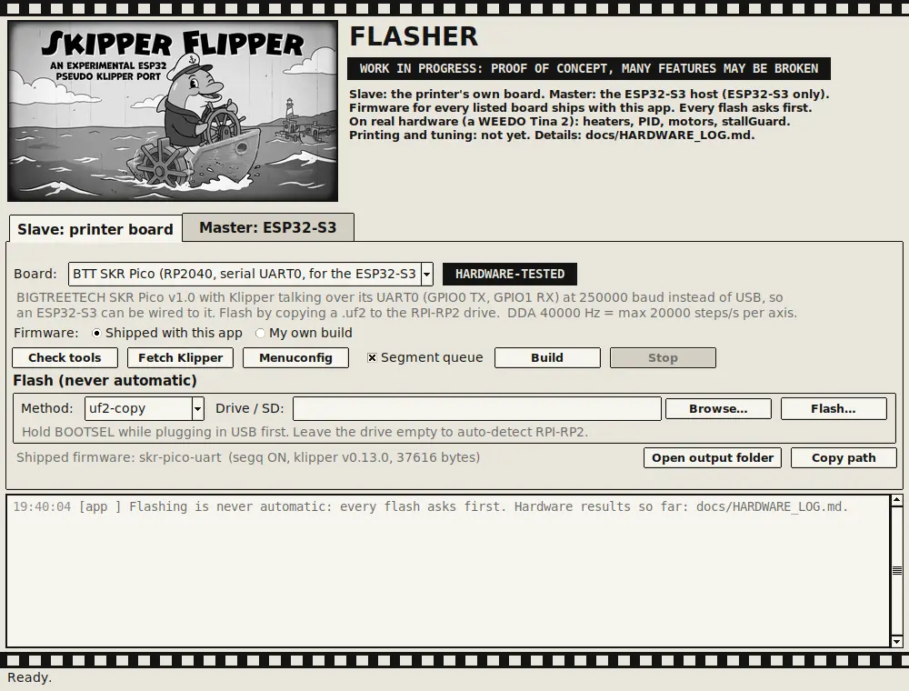

A WiFi "brain" for old 3D printers. Mostly working, needs tuning and proper testing: installed in a WEEDO Tina 2 with a BTT SKR Pico, it heats, PID-tunes, runs the motors and TMC2209 drivers and triggers stallGuard from a phone. Printing a file has only run in simulation so far.
Thermistors, heater PWM, PID tuning, the heater test and the safety shutdowns all work on real hardware. Needs proper testing over longer runs.
Motor tests turn the motors, every TMC2209 answers, and stallGuard triggers. The threshold, motor current, speeds and rotation_distance still need tuning (there are boxes for that on the Test bench).
The hotend fan is confirmed working. The part-cooling fan and the third fan output have not run yet: possibly a broken wire. Will update when tested.
The ESP32-S3 identifies, configures and clock-syncs the board over four jumper wires, recovers from board power cycles, and serves the status page, console, printer.cfg editor, Test bench and Printer page from its own WiFi.
Moves, full homing and probing, and printing an uploaded G-code file: tested against a simulated board and in 1,000+ unit checks, not yet on the printer.
New, not yet on a printer: Klipper's input shaping and pressure advance, an accelerometer it finds on its own, bed mesh with a coloured heightmap and screw tilt. Tuning guide.
New, not yet on a printer: bolts through the case as touch pads (or plain switches) for preheat, home, unload and a held E-stop. Buttons guide.
New, not yet on a real display: a £3 I2C OLED on GPIO8/9 shows the temperatures, a progress bar, and HOMING or LOADING as it happens. OLED guide.
Works on hardware: a bare SD module soldered to the ESP32's back on GPIO10-13 mounts, lists and takes uploads from a phone. Printing from it is next.
Three builds by board memory, picked by the Flasher in one click. Bigger boards get WiFi firmware updates and more look-ahead; every build gets slicer uploads, home WiFi, thumbnails, print history and crash reports. Built, not yet on hardware.
Slave (printer board) and Master (ESP32-S3 only) tabs, firmware for every listed board shipped ready to flash. The SKR Pico and ESP32-S3 paths are used on real hardware; the other boards are compile-only.

The Flasher, Slave tab, with the SKR Pico firmware that runs in the Tina 2.
Tuning (stallGuard, motor current, speeds, rotation_distance), proper long-run testing, a first real print, the remaining fans, and SD-card support for big G-code files. The whole story, every mistake included, is in the paper A Frankenstein Experience (PDF). Real-hardware results, dated: hardware log.
git clone https://github.com/The-Dorkknight/esp-printhost
cd esp-printhost
sudo python3 printhost.pyLinux only for the probe and the one-command setup. The README lists exactly what the setup command changes on your system, and why wrong firmware can leave a board unresponsive until re-flashed.